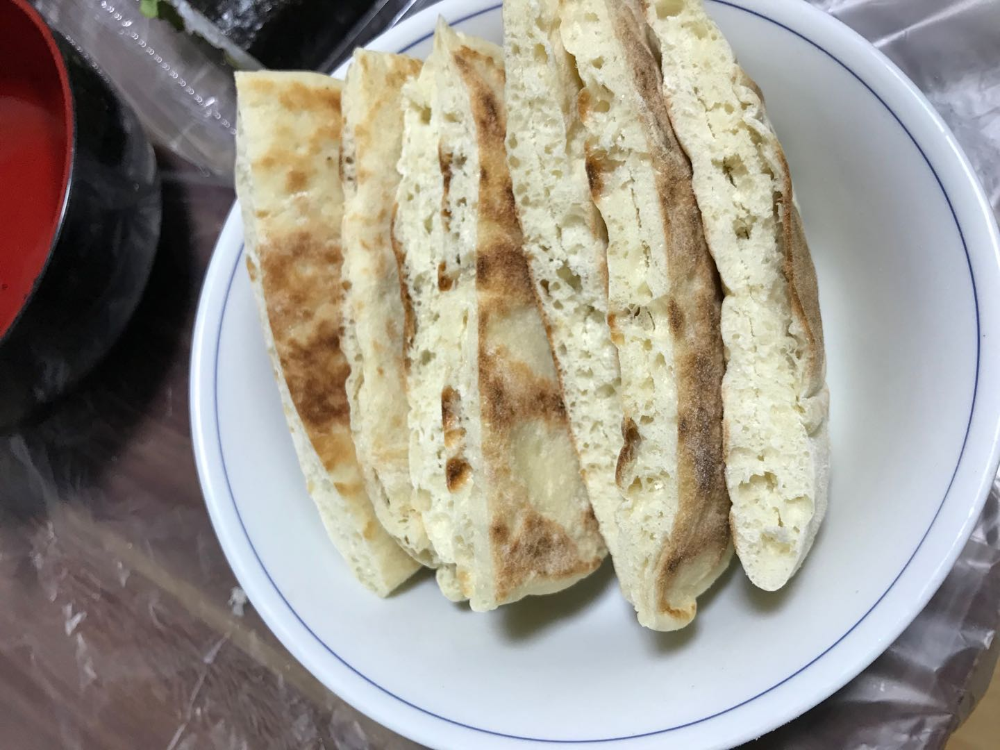
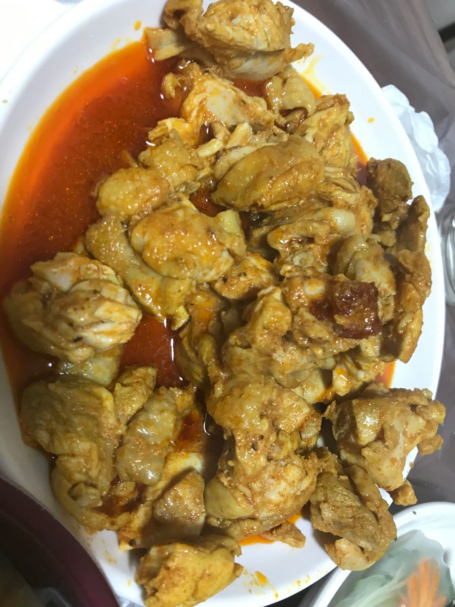
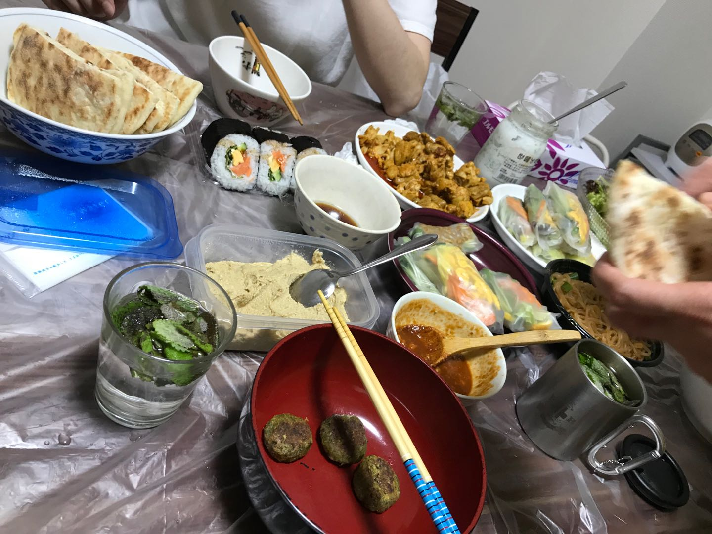
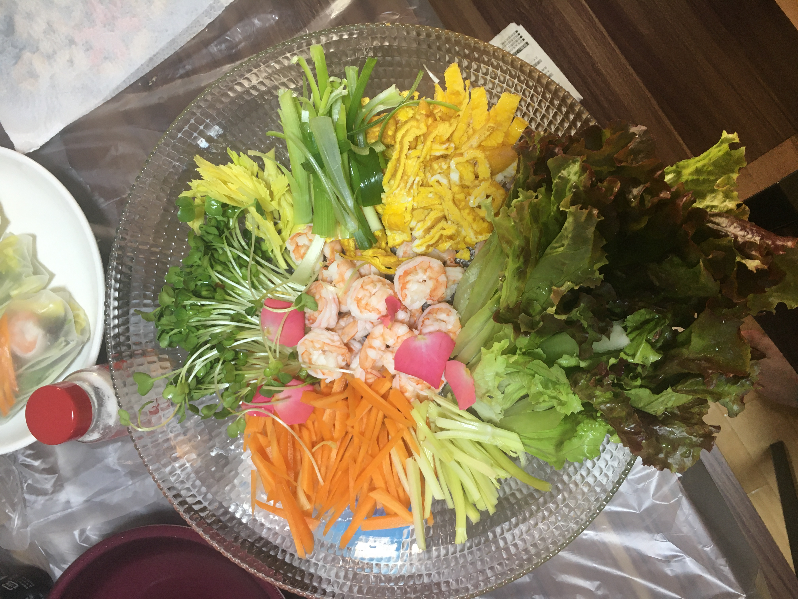
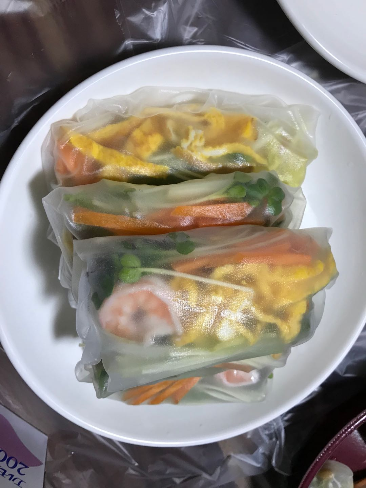
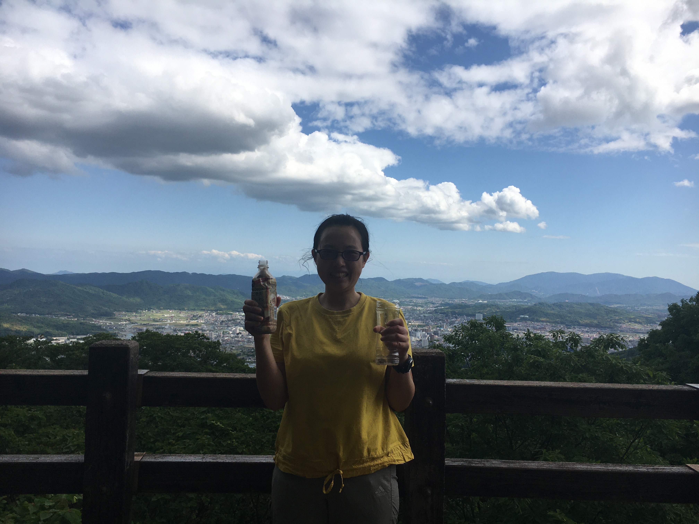
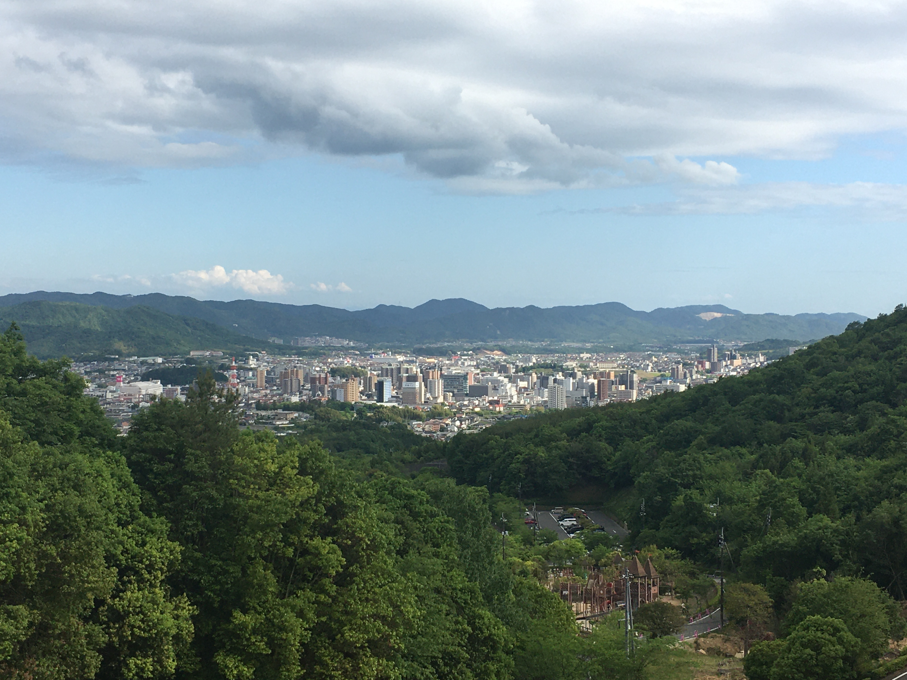

上一章
下面是中东菜

过滤酸奶做tzatziki

falafel(酸奶机和搅拌机都是用疫情下政府发的10万买，还买了一个搅拌果汁机)

falafel

Pita Bread很难做，里面其实没洞的。后来发现这其实就是鸡蛋灌饼。

里面强行切开的Pita Bread

chicken sharwama

我做的一桌中东菜，有hummus
我做的一桌中东菜，有hummus

话说这天吃中东菜，乐乐带了个春卷来。一开始还带了自家种玫瑰想放进去，但不是食用蔷薇。我一时好奇想单独吃一片，还好，我几时发现不行没放进去。这就是春卷用的菜

乐乐的春卷
这是吃中东菜那天的日记，我和乐乐也去了龙王山：
2020年5月24日
中东菜宴客及龙王山登顶
周日下午和lele去登龙王山，之后请她和另一朋友来家里吃中东菜，本来打算自己吃的，不过正好和她出去，就邀请她一起了，和别人一起吃我更有动力做呢。因为最近买了搅拌机，我开始做中东菜了，其实做的都很简单，都是以前在德国吃过的。
我早一天做了一个下午及晚上，总算完成大部分，我请客的有pita bread,tzatziki,chicken shawarma,hummus,falafel及用tahini配柠檬汁做的沙拉。几个菜他们都没听过，吃法对他们来说尤其新鲜，尤其咸的酸奶当酱配肉吃。
为了做中东菜我还有新发现呢，首先我近日买了酸奶机，但这里没买到发酵菌，我就用酸奶来做。那次在超市随便买了一种标榜“高蛋白”的酸奶，一打开很浓稠，完全没水，好像希腊酸奶。之后我把它作为原料放入酸奶机，做出来其实也很多水。我在网上看教用cheese cloth把水过滤掉，但我这买不到cheese cloth，我就试试用百元店买过滤茶叶的东西，竟然可以,我想厨房水渠用的过滤网也行，为此我成功发现做希腊酸奶的方法 -用茶隔过滤。
另外，你用什么原料做出来就是怎样的酸奶，我试过买其他酸奶来发酵，做出来就是和买回来的一样，过滤也过滤不掉水的，所以希腊酸奶是用特定的发酵菌。
还有pita bread,这是中东一种很普通的面包，以前在德国经常吃，由于最近买了料理机开始做中东菜，为了请客我也尝试做pita bread，才知道原来有那么大的科学。Pita bread的特点是中间分开，好像一个口袋那样，可以放东西进去做三明治。以前吃的时候从来没想过它为什么像一个口袋，看食谱才知道其科学原理，那是因为中间的水份受热后蒸发变成水蒸气，使的饼膨胀（但不会爆炸），所以中间自然分开。
虽然我没做成功，但觉得pita bread好神奇。古代的人就已经有这种智慧做出这么科学的饼来呢。
最后上照片，我的tzatziki自己很喜欢，配chicken shawarma很好吃。这个菜没吃完，我第二天继续。
falafel,这个味道很刺激，很好吃pita bread,自己用刀把中间切开的
还有hummus忘了拍照。这些菜在欧洲都很普通，不过在这里就变得稀奇。我发现我去过那么多地方吃过那么多东西，我身边的朋友也受惠呢。
好了，刚才说我和lele去龙王山，这个山的泉水很有名，也就成就了西条美酒。这个山的特点是登顶也已看西条全景。我们一直觉得西条是个镇，但上去看发现西条还是挺繁华，挺多高楼大厦的哦。由于这是很熟悉的地方，我们上去就开始认地标了，真是很亲切的感觉呢。

龙王山登顶，当时我还冰好咖啡带过去。

龙王山顶俯视西条景色。
下面是德国菜

德国猪蹄。德国烤猪蹄很出名不过也有煮的，以前德国超市很喜欢一种真空包装，3欧。很大一只就是煮的，非常好吃。这款猪蹄带有啫喱，放在米饭让米饭吸收高汤精华，米饭特别香。我这个猪蹄要泡5天盐水。带骨头的煮出来的汤非常鲜。我好像德国猪蹄那样，把汤煮到浓缩，所有让胶原蛋白把汤凝固成啫喱状加米饭吃，不过没有人家的好吃。

猪蹄做好了。

这是有次去德国出差偷运回来的正宗猪蹄。

Kartofelsalat德国土豆沙拉。提起德国菜很多人首先想到猪蹄，还有酸菜，其实这款土豆沙拉也是很普通很普通的德国菜。加醋和高汤煮的，吃起来很开胃，要提前一晚准备。

一桌正宗德国菜，还有德国酸菜汤（Sauerkraut）。为了迎合气氛，我还买了蜡烛的（德国餐馆每家都在桌上放小蜡烛）。

跑题插句，有段时间家里冰箱坏了（大概2023年4月），我做了好多酸菜。

猪蹄宴。那次是花花要去泰国前吃的，那晚还有午梅，我教她们玩折纸。

乡土料理 - 槐花炒鸡蛋。话说那次打网球槐花就在眼前，又一次便利性激发，摘了很多回去炒鸡蛋。如果远我都不会去摘。

网球场附近摘的槐花，在树上一股清香。

豆腐汉堡

老北京芥末墩，在淘宝买的芥末，可以做正宗的了。

不正宗的油泼面及红油抄手。

可能是印度malsala。

有段时间早餐很喜欢这个德国肠。香港也有这个香肠但卖的比日本贵。

早餐，有我成功复制的德国咖喱味鹰嘴豆酱。自从学会看化妆品成分表后。“看成分表”的观念深入我心，某天想起来以前德国很喜欢吃的鹰嘴豆酱（有段时间我午餐都吃面包，DM每款面包酱都吃过，这款最好吃），网上查了一下成分很容易就复制出来。这个酱我还送过人，又多一门技能。
下面我一篇日记:2020年5月16日
回到德国
最近买了个料理机，突然想起来以前在德国经常吃的鹰嘴豆面包酱。有段时间经常午饭吃面包，在超市买了不同面包酱吃，发现这种特别好吃，而且很健康。当时我也看过成分，但完全没有自己做的意识，话说当时我也有料理机来着。 我再看一次那个酱的成分，发现也能自己做啊，其实它的配方很简单，最后我自己也能做出和它很像的面包酱出来，yeah!当我拿着涂了鹰嘴豆面包酱的面包吃时，有从回德国的感觉。
为什么我以前看到成分表没有自己做的观念而现在会有呢？因为我开始做护肤品了。我做护肤品也会参考其他人的成分表的，然后自己跟着做。我把这个观念引申到食品上了。我觉得自己很棒！学会看成分表其实是种技能，能令你的生活变得更好的。
德国买的是咖喱味，我想做花椒，韩国辣椒，孜然，香蒜，柠檬等味道呢。我不会钻研菜谱，没有做饭技术，但我喜欢创新！等我把手上的吃完就再来。以后我又多一样东西送人了。
吃着这个面包真有回到德国的感觉呢。
有段时间早餐很喜欢这个德国肠。香港也有这个香肠但卖的比日本贵。

招待客人（花花）吃的港式早餐（这张照片那么漂亮应该是对方拍的）。

另一次招待客人（又是花花）吃的早餐，这次吃她没吃过的tzatziki（看到这张照片我肯定。这张及上面那张都是她拍的）。
div class="picture-container">

辛拉面，由于不是健康食品我很少吃，但很喜欢所以能吃是个享受。

韩国bossam。我最喜欢的韩国菜不过这个做的不是很像。

不正宗的韩餐。

两款韩式炸鸡及啤酒，也是不正宗的。

韩式烤肉。

越南薄饼bahn xeo，apsaras学回来的。这个不好做，我做的没人家脆，不过人家告诉我秘方了。

又是apsaras学回来的柬埔寨椰香南瓜布丁

鸡爪，我很喜欢的。

从小到大，最喜欢的就是鸡翅。


天气热时我会喝啤酒。

悠闲下午茶

手打泡沫咖啡。用百元店买来的打蛋器打。买回来发现其实不太好打蛋，但能打奶泡。杯子是在高屋free marketアンの時間的摊档买的，日本产有牌子的。

也是在高屋free marketアンの時間的摊档买的杯子，也是名牌。这是抹茶。

酸奶咖啡

沙拉+斯洛文尼亚土豆菠菜

还是斯洛文尼亚土豆菠菜

正宗欧式午餐

我做的沙拉都很棒！有中东带柠檬芝麻酱的，还有非洲的kachumbari（在东京肯尼亚餐厅学的）。


墨鱼汁面条及土豆汤。话说我湿疹没好之前对墨鱼汁过敏，接触到会很痒。后来我服了姜黄粉后就再没发作了。

紫苏水，我有时候加冰果醋喝。紫苏在农家超市买。事缘2017年夏天喝朋友去京都一个生产紫苏的地方，吃过紫苏食品我就会煮紫苏水了。

西条特产 - 美酒锅。可以买酒回家自己做的。这个味道怎样我没印象了。

一个人的烧烤。

又是一个人的烧烤。

很多时候我就这样吃。


微波炉蒸蛋，摄于2023年9月。

远距离看一下凌乱的餐桌。/div>


下一章